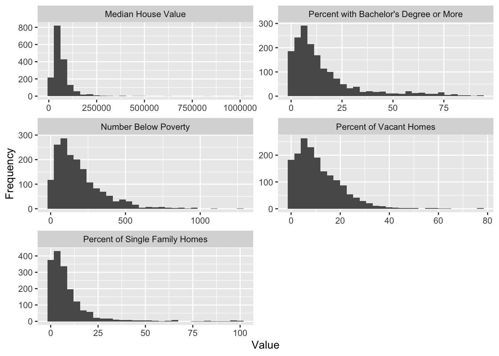
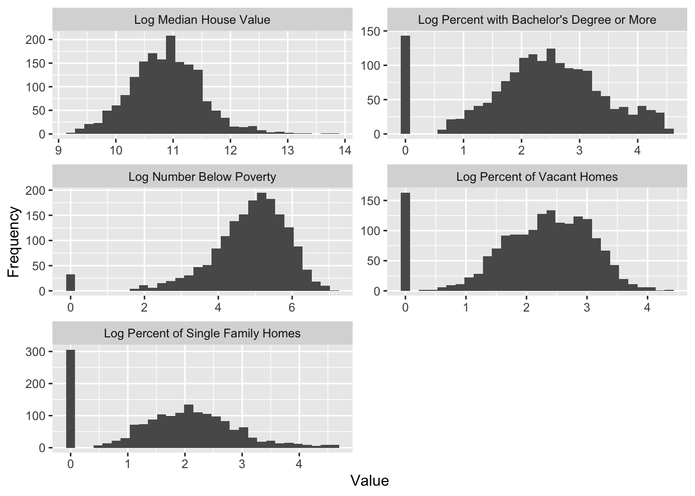
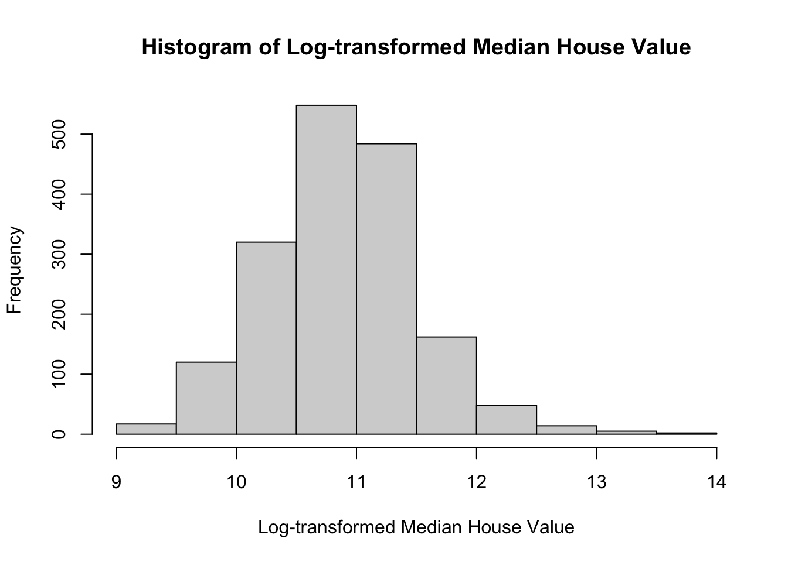
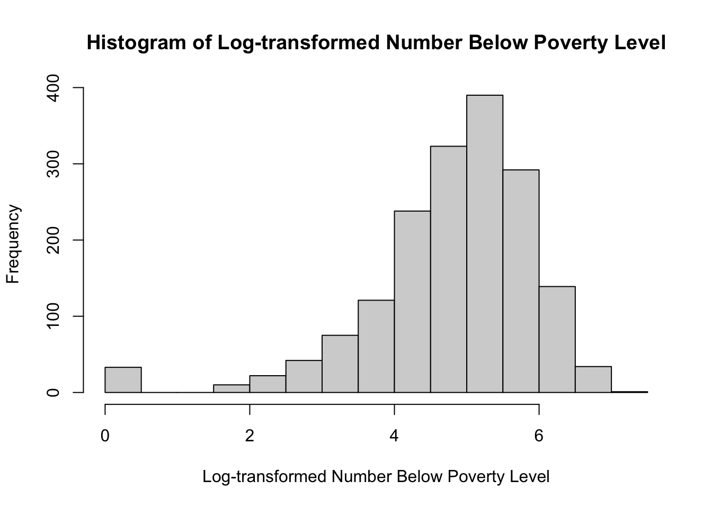
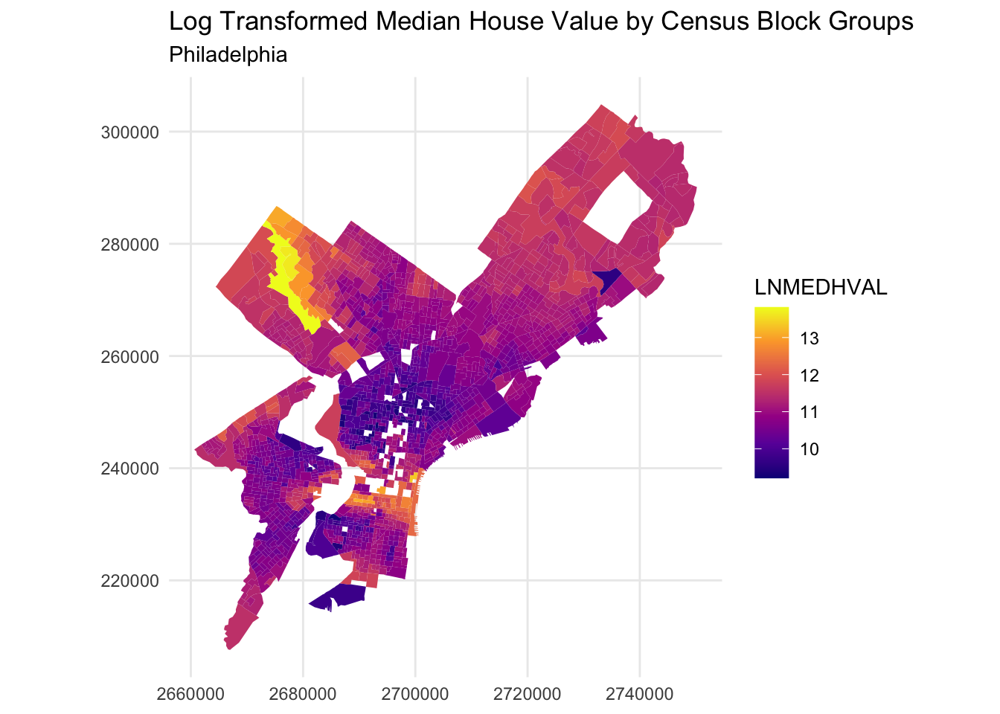
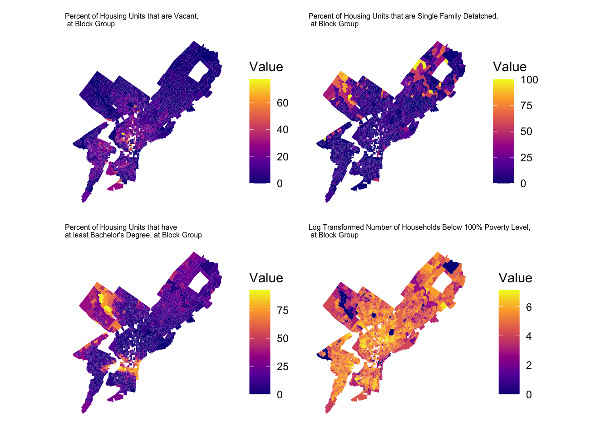

Homework 1: Using OLS Regression to Predict Median House Values in Philadelphia
1 Introduction
In this analysis, we use a multiple linear regression model to predict median house values in Philadelphia. Drawing on Philadelphia’s tract-level census data, we examine the impact of our four predictors on our response variable block group median house value: percentage with at least a bachelor’s degree, percentage of vacant spaces, number living below the poverty line, and percentage of single family housing units.
Prior theoretical knowledge of the relationships between housing markets and socioeconomic factors has led us to hypothesize a relationship between these four predictors and median house value. High rates of educational attainment and single-family homes are likely positively associated with house values as they may indicate neighborhood stability by signaling higher earning potential and long-term residency. Conversely, high rates of vacancy and poverty levels are likely negatively associated with house values as they may indicate neighborhood instability through a lack of high earning residents and occupants overall. In this analysis, we aim to assess the explanatory power of these predictors and briefly explore if these relationships possess any spatial patterns.
2 Methods
2.1 Data Cleaning
The original dataset contained 1,816 Census block groups across Philadelphia. Following the data preparation protocol provided in the assignment, we removed four types of block groups:
1. Those with fewer than 40 residents,
2. Those with no housing units,
3. Those with median house values below $10,000, and
4. One extreme outlier in North Philadelphia with an exceptionally high median house value (over $800,000) and a very low median household income (below $8,000).
After applying these filters, the final cleaned dataset consisted of 1,720 block groups. All variables used in this analysis were numeric and contained no missing values after cleaning.
The cleaned dataset includes the following key variables used in subsequent modeling:
- MEDHVAL – Median house value (dependent variable)
- PCTBACHMOR – Percentage of residents with at least a bachelor’s degree
- PCTVACANT – Percentage of housing units that are vacant
- PCTSINGLES – Percentage of detached single-family homes
- NBELPOV100 – Number of households below the poverty line
All variables were obtained from the American Community Survey (ACS) 5-year estimates at the block group level for Philadelphia. The variables were selected to capture major socioeconomic and housing characteristics relevant to neighborhood housing values.
2.2 Exploratory Data Analysis
2.2.1 Variable Distributions
Exploratory Data Analysis (EDA) was conducted to assess variable distributions, detect potential skewness, and identify relationships among predictors prior to model estimation. The objective of this step was to ensure that the data met the assumptions required for Ordinary Least Squares (OLS) regression and to guide appropriate variable transformations.
First, frequency histograms and scatterplots were used to visually assess the distributional properties of both the dependent variable and the explanatory variables. These graphical tools help determine whether linearity and normality assumptions are reasonably satisfied.
When strong right-skewness or heteroskedasticity was observed, logarithmic transformations were applied to stabilize variance and improve normality. The general transformation function used is expressed as: \[ y_i' = \ln(1 + y_i) \] where \(y_i\) represents the original variable and \(y_i'\) is the transformed variable.
To examine relationships among predictors and detect potential multicollinearity, the Pearson correlation coefficient was computed for each pair of independent variables, using the formula: \[ r = \frac{\sum (x_i - \bar{x})(y_i - \bar{y})} {\sqrt{\sum (x_i - \bar{x})^2}\sqrt{\sum (y_i - \bar{y})^2}} \] where \(\bar{x}\) is the sample mean of the predictor, and \(\bar{y}\) is the sample mean of the dependent variable.
Visualization techniques, including choropleth mapping using sf and ggplot2, were employed to explore potential spatial clustering or spatial dependence among variables. These visual checks provide preliminary evidence for whether OLS assumptions of spatial independence are likely to be met.
2.3 Multiple Regression Analysis
Multiple regression models a dependent variable as a function of multiple predictors, rather than a single predictor such as in simple regression. These predictors each have a coefficient that represents their effect on a dependent variable, controlling for all other predictors. This approach improves model accuracy in situations where multiple variables better explain outcomes of a dependent variable.
This report regressed log-transformed median house value (LNMEDHVAL) on the proportion of housing units that are vacant (PCTVACANT), percent of housing units that are single family detached homes (PCTSINGLES), proportion of residents with at least a bachelor’s degree (PCTBACHMOR), and log-transformed number of households with incomes below 100% poverty level (LNNBELPOV). This regression function can be expressed as follows: \[ \text{LNMEDHVAL} = \beta_0 + \beta_1 \text{PCTVACANT} + \beta_2 \text{PCTSINGLES} + \beta_3 \text{PCTBACHMOR} + \beta_4 \text{LNNBELPOV} + \varepsilon \] Multiple regression relies on several key assumptions, most of which mirror the assumptions of simple regression. First, linear relationships should exist between the dependent variable and each predictor, assessed through scatterplots or residual plots and addressed via transformations if needed. Second, residuals should be approximately normally distributed, which can be assessed through a histogram. Third, residuals must be random — indicating that observations are not systematically related. Fourth, residuals must be homoscedastic, exhibiting constant variance across all values. Fifth, the dependent variable should be continuous.
A unique assumption for multiple regression is avoiding perfect multicollinearity: no predictor should be strongly correlated with others. Multicollinearity inflates standard errors and produces unstable coefficient estimates. This assumption can be checked by analyzing the correlation coefficients between all dependent variables, with anything greater than 0.9 generally being a cause for concern. Variance Inflation Factor (VIF) can be used to further inspect a suspicion of multicollinearity, with a VIF < 5 being generally acceptable and a VIF < 10 warranting more inspection. A VIF > 10 strongly indicates multicollineariy.
In the above multiple regression function, \(\beta_0\) represents the depedent variable when all predictors are zero. The coefficients of the predictors \(\beta_1, \beta_2, \beta_3, \beta_4\) each represent the change in the dependent variable with a one unit increase in the predictor, holding all other predictors constant.
These \(\beta\) coefficients in multiple regression are simultaneously estimated in order to minimize the Error Sum of Squares (SSE). The general formula and breakdown of what is to be minimized is provided below (with n being the number of observations, and k is the number of predictors): \[ SSE = \sum_{i=1}^{n} \varepsilon^2 = \sum_{i=1}^{n} (y_i - \hat{y}_i)^2 = \sum_{i=1}^{n} \left[ y_i - \left( \hat{\beta}_0 + \hat{\beta}_1 x_{1i} + \hat{\beta}_2 x_{2i} + \cdots + \hat{\beta}_k x_{ki} \right) \right]^2 \]
This minimization works by finding the \(\beta\) coefficients that, when raw predictor \((x_{i})\) data is used, will minimize the residuals \((y_i - \hat{y}_i)\). SSE is also used to calculate Mean Squared Error (MSE), noted by the estimated parameter \(\hat\sigma^2\). This is the estimate of the variance of the error term \(\epsilon\). The formula for MSE, in terms of SSE is noted below: \[ MSE = \frac{SSE}{n - (k+1)} \]
Another term in regression analysis is Total Sum of Squares (SST). It measures the total variation in the dependent variable around it’s mean by using the following formula: \[ SST = \sum_{i=1}^{n} (y_i - \bar{y})^2 \] Using this formula for SST, and the previously stated formula for SSE, we can calculate \(R^2\) — the coefficient of multiple determination. This is the proportion of variance in the model explained by all k predictors, and is the represented by the following: \[ R^2 = 1 - \frac{\text{SSE}}{\text{SST}} \] Multiple regression presents a unique dillema in comparison to simple regression, in that adding more predictors will generally increase \(R^2\). Adjusting \(R^2\), noted below, can account for additional predictors and determine whether or not they are improving the model. \[ R_{\text{adj}}^2 = \frac{(n-1) R^2 - k}{n - (k+1)} \] This report will conduct two tests to evaluate the model. First, there is the F-ratio — a model utility test. F-ratio tests the following null hypothesis \(H_0\) and alternative hypothesis \(H_a\): \[ H_0: \beta_1 = \beta_2 = \beta_3 = \beta_4 = 0 \] \[ H_a: \text{At least one } \beta_i \neq 0 \] In essence, the null hypothesis states that all of the model \(\beta\) parameters (except \(\beta_0\), which is not a predictor coefficient) are zero, and the alternative states that at least one of those parameters is not zero. Failure to reject the null hypothesis suggests that the model is incredibly weak, and should be reevaluated. If the null hypothesis is rejected, the second test can be conducted with the following hypotheses. \[ H_0: \beta_i = 0 \] \[ H_a: \beta_i \neq 0 \] In this test, we evaluate the performance of each predictor i (in the case of this report, the 4 predictors stated earlier). A t-test can be conducted, where the t-statistic for each predictor is calculated as the estimated coefficient divided by its standard error: \[ t_i = \frac{\hat{\beta}_i - \beta_i}{s_{\hat{\beta}_i}} \] Each predictor has its own p-value calculated using the above t-statistic. If the p-value is less than 0.05, we reject the null hypothesis for that predictor and conclude that it is a statistically significant predictor of the dependent variable. If the p-value is greater than or equal to 0.05, we fail to reject the null hypothesis and conclude that the predictor is not statistically significant.
2.4 Additional Analysis
Using the stepAIC() and step$anova command, we applied bidirectional stepwise regression to analyze the fit of our linear model. Stepwise regression determines the minimum number of predictors that yield the best model. Stepwise regression automatically selects or eliminates predictors, either forwards, backwards, or bidirectionally, based on some type of criteria that measures the goodness of fit. In this case, we are attempting to determine the predictor or combination of predictors that minimize the Akaike Information Criterion (AIC). AIC is an estimator of predictor error and provides insight into the quality of the model by penalizing increasing number of predictors that could lead to over-fitting.
Stepwise regression, however, poses many limitations as it does not consider theoretical relevance of the predictors, may overlook alternative valid models, and runs the risk of excluding important predictors and including unimportant predictors, especially due to the numerous t-tests measuring whether the null hypothesis, \(\beta_k\) = 0, is true.
To perform cross-validation, we used the trainControl() function with the method parameter set to “cv” (cross-validation) and the train() function with the method parameter set to “lm” (linear model). Cross-validation is a technique that measures model performance unbiasedly by training the model on a select subgroup of observations and seeing how well it estimates deliberately excluded observations. K-fold cross validation where k=5, specifically, divides data sets into five non-overlapping folds and repeatedly uses four folds for training the model and one fold for validating the model so that each fold trains the model multiple times and validates the model once. This method ensures a model’s generalizability to new data and minimizes distortion by avoiding omitting and duplicating data in its measure of fit. The Root Mean Square Error (RMSE) is the summary of the model’s performance across all folds. For each fold, the average squared difference or Mean Squared Error (MSE) is calculated as the average squared difference between predicted values, \(hat{y}_i\), estimated by the model’s \(\beta\) coefficient, and the actual value, \(y_i\).The RMSE is then calculated by taking the square root of the average MSE of all five folds. The complete formula for RMSE is as follows: \[ RMSE = \sqrt{\frac{1}{n} \sum_{i=1}^{n} (y_i - \hat{y}_i)^2} \] After performing k-fold cross-validation on two or more models, the RMSE of the models can be compared to determine which model has the best performance. A smaller RMSE indicates that the model’s predictions are, on average, closer to the actual values, and thus more representative of the data.
2.5 Software Used
All data analysis was conducted using R. Within R, the following packages were used to perform data preparation, exploratory analysis, regression modeling, and visualization: ggplot, dplyr, sf, patchwork, MASS, and caret.
3 Results
3.1 Exploratory Results
Distribution of Variables The distributions of the dependent variable (MEDHVAL) and four key predictors were first examined using histograms. All variables were positively skewed, particularly median house value and poverty rate.
To explore if transformations were needed to adjust the distributions of these predictors, we log transformed them and generated the following histograms:

The above histograms show that transforming PCTBACHMOR, PCTVACANT, and PCTSINGLES results in distributions that are zero-inflated — that is, they have a huge spike at zero. This suggests that a log-transformation is not appropriate for these predictors. The dependent variable MEDHVAL, and the predictor NBELPOV100 are normally distributed after the log transformation, so this appropriate for these variables.
Summary Statistics Table Table 1 summarizes the mean and standard deviation of all key variables.
**Table 1. Summary statistics for dependent and predictor variables**| Variable | Mean | SD |
|---|---|---|
| Median House Value (MEDHVAL) | 66287.73 | 60006.08 |
| Households Below Poverty (NBELPOV100) | 189.77 | 164.32 |
| % with Bachelor’s or Higher (PCTBACHMOR) | 16.08 | 17.70 |
| % Detached Single-Family Homes (PCTSINGLES) | 9.23 | 13.25 |
| % Vacant Housing Units (PCTVACANT) | 11.29 | 9.63 |
Log Transformations
Because the variables were positively skewed, log transformations were applied to stabilize variance and improve normality.


Correlation Analysis To check for multicollinearity, Pearson correlation coefficients were computed among the predictors.
PCTBACHMOR LNNBELPOV100 PCTVACANT PCTSINGLES
PCTBACHMOR 1.0000000 -0.3197668 -0.2983580 0.1975461
LNNBELPOV100 -0.3197668 1.0000000 0.2495470 -0.2905159
PCTVACANT -0.2983580 0.2495470 1.0000000 -0.1513734
PCTSINGLES 0.1975461 -0.2905159 -0.1513734 1.0000000Correlations were moderate: the strongest being between PCTBACHMOR and LNNBELPOV100 (r = –0.32). This indicates that the predictors were not highly collinear and all could be retained in the regression model.
Spatial Patterns Finally, choropleth maps were created to visualize the spatial patterns of median house value and predictor variables across Philadelphia.


3.2 Regression Results
The output of the regression model (\(\text{LNMEDHVAL} = \beta_0 + \beta_1 \text{PCTVACANT} + \beta_2 \text{PCTSINGLES} + \beta_3 \text{PCTBACHMOR} + \beta_4 \text{LNNBELPOV} + \varepsilon\)) in R is as follows.
Call:
lm(formula = LNMEDHVAL ~ PCTVACANT + PCTSINGLES + PCTBACHMOR +
LNNBELPOV, data = Regression_shpData)
Residuals:
Min 1Q Median 3Q Max
-2.25817 -0.20391 0.03822 0.21743 2.24345
Coefficients:
Estimate Std. Error t value Pr(>|t|)
(Intercept) 11.1137781 0.0465318 238.843 < 0.0000000000000002 ***
PCTVACANT -0.0191563 0.0009779 -19.590 < 0.0000000000000002 ***
PCTSINGLES 0.0029770 0.0007032 4.234 0.0000242 ***
PCTBACHMOR 0.0209095 0.0005432 38.494 < 0.0000000000000002 ***
LNNBELPOV -0.0789035 0.0084567 -9.330 < 0.0000000000000002 ***
---
Signif. codes: 0 '***' 0.001 '**' 0.01 '*' 0.05 '.' 0.1 ' ' 1
Residual standard error: 0.3665 on 1715 degrees of freedom
Multiple R-squared: 0.6623, Adjusted R-squared: 0.6615
F-statistic: 840.9 on 4 and 1715 DF, p-value: < 0.00000000000000022We regressed the natural log of median house value (LNMEDHVAL) on the percentage of vacant houses (PCTVACANT), percentage of single-family houses (PCTSINGLES), percentage of residents with a bachelor’s degree or higher (PCTBACHMOR), and the natural log of the neighborhood poverty rate (LNNBELPOV). All four predictors are statistically significant with p-values far below a threshold of p < 0.05.
The log-transformation of median house value (LNMEDHVAL, the dependent variable) means that we can interpret the coefficients as percent changes in median home value for a one unit change in the predictor. A one percentage point increase in vacant houses (PCTVACANT) is associated with an approximate 1.92% decrease in median home value. A one percentage point increase in single-family houses (PCTSINGLES) is associated with an approximate 0.30% increase in median home value. A one percentage point increase in residents with a bachelor’s degree or higher (PCTBACHMOR) is associated with a roughly 2.09% increase in median home value. For LNNBELPOV — a log-transformed predictor — a 1% increase in the number of people in poverty corresponds to an approximate 0.079% decrease in median home value.
The very low p-values indicate that if there were actually no relationship between each predictor and median home value (i.e., \(H_0: \beta_i = 0\)), the probability of observing the estimated coefficients we see would be very close to zero. Therefore, we can reject the null hypotheses for all predictors \(H_0: \beta_i = 0\).
The model explains a substantial portion of the variance in median home values, with \(R^2 = 0.6623\) and \(R^2_{adj} = 0.6615\). The F-statistic is highly significant, with \(F = 840.9 \text{ and a p-value of } p < 0.00000000000000022\), allowing us to reject the \(H_0\) that all coefficients in the model are 0.
3.3 Regression Assumption Checks
In this section, we assess whether our multiple regression model meets key assumptions and take the necessary steps to address any violations of these assumptions. Early visualizations of the distribution of the predictors PCTBACHMOR, NBELOWPOV100, PCTVACANT, and PCTSINGLES and the dependent variable MEDHVAL were presented by histograms which all showed positively-skewed distributions for all predictors. While multiple regression assumptions require the normality of residuals and not predictor values, non-normal distribution of predictors values can indicate violations of the assumptions of non-normal residuals and a lack of linearity.

The skewedness of histograms of each predictor is reflected in the scatter plots of the predictors by the dependent variable median house value, MEDHVAL, as, as the predictor values increase, y values cluster towards lower values. The lack of linearity between the predictor and MEDHVAL and the skewed distribution of predictor values suggest that some type of nonlinear transformation may need to occur in order to normally distribute values and achieve linearity. We performed log transformations which are commonly used to correct the positively skewed distributions evident in our variables.

We applied logarithmic transformations to all predictors and the dependent variable to see whether the transformations would improve distribution of their values and subsequently allow us to assume linearity and residual normality. We only substituted the log-transformed MEDHVAL (LNMEDHVAL) and log-transformed NBELOPOV (LNNBELOPOV) for the rest of our analysis. The log-transformed predictors PCTVACANT, PCTSINGLES, and PCTBACHMOR did not return an improvement and instead produced zero-inflated distributions. We proceeded to calculate our standardized residuals with the new model of original predictors PCTVACANT, PCTSINGLES, and PCTBACHMOR and with our log-transformed predictor LNNBELPOV by our log transformed dependent variable LNMEDHVAL. The histogram of the standardized residuals show the normality in residuals needed per our assumption and support the need for the logarithmic transformations.

Standardized residuals are residuals divided by their standard deviation as a means to prime residuals across different observations for comparison through normalization. The scatter plot of our standardized residuals shows general homoscedasticity or consistent variance of residuals. There is general uniformity of the standardized residuals as most lie between -2 and positive 2. There are some outliers that extend past -4 and 4 but they do not dominate the overall pattern. There is also no funneling affect or any other pattern of non-constant variance. Thus, our model satisfies the assumption of homoscedasticity of residuals.
Initial spatial visualizations of the dependent and predictor variables suggest that there may be some spatial autocorrelation between their respective measurements. The choropleth map of the logged dependent variable LNMEDHVAL shows that lower values seem to be concentrated in parts of North, Southwest, and West Philadelphia while higher values were clustered in Upper North Philadelphia. The choropleth map of the predictor PCTSINGLES shows higher percentages in parts of Upper North and Northeast Philadelphia. The choropleth map of the predictor PCTBACHMOR shows higher percentages in parts of Upper North and Center Philadelphia. The choropleth map of the logged predictor LNNBELPOV showed lower values in parts of Upper North, Northeast, and Center Philadelphia. The choropleth map of the predictor PCTVACANT shows higher percentages in parts of North, West, Southwest, South, and Center Philadelphia.This visual inspection suggests that block groups might not be entirely independent of each other and could require further spatial assessment.

The choropleth of standardized residuals suggests possible spatial autocorrelation as there seems to be a concentration of lower values in the southern half of Philadelphia. Visually, there seems to be a gradient effect stemming outward from North Philadelphia into West, Southwest, and South Philadelphia. This indicates that their could be additional factors producing systematic under prediction in the southern half of Philadelphia, especially in North Philadelphia.
3.4 Additional Models
Stepwise Regression ANOVA table
Start: AIC=-3448.16
LNMEDHVAL ~ PCTVACANT + PCTSINGLES + PCTBACHMOR + LNNBELPOV
Df Sum of Sq RSS AIC
<none> 230.33 -3448.2
- PCTSINGLES 1 2.407 232.74 -3432.3
- LNNBELPOV 1 11.692 242.02 -3365.0
- PCTVACANT 1 51.543 281.87 -3102.8
- PCTBACHMOR 1 199.014 429.35 -2379.0Stepwise Model Path
Analysis of Deviance Table
Initial Model:
LNMEDHVAL ~ PCTVACANT + PCTSINGLES + PCTBACHMOR + LNNBELPOV
Final Model:
LNMEDHVAL ~ PCTVACANT + PCTSINGLES + PCTBACHMOR + LNNBELPOV
Step Df Deviance Resid. Df Resid. Dev AIC
1 1715 230.3317 -3448.162Our initial model before performing stepwise regression: \[ \text{LNMEDHVAL} \sim \text{PCTVACANT} + \text{PCTSINGLES} + \text{PCTBACHMOR} + \text{LNNBELPOV} \] As mentioned earlier, stepwise regression based on AIC evaluates whether a predictor improves the model fit by reducing the AIC. Our initial model had an AIC of -3448.162. When PCTSINGLES was removed, the AIC increased to –3432.3. When LNNBELPOV was removed, the AIC increased to –3365.0. When PCTVACANT was removed, the AIC increased to –3102.8. When our last predictor PCTBACHMOR was removed, the AIC increased drastically to –2379.0. Since the removal of each predictor resulted in a higher AIC, all four initial predictors were retained in the final model. This suggests that the initial model was selected by stepwise regression as being a model that balances explanatory power and complexity.
K-fold Cross-validation Table
Linear Regression
1720 samples
5 predictor
No pre-processing
Resampling: Cross-Validated (5 fold)
Summary of sample sizes: 1376, 1376, 1376, 1376, 1376
Resampling results:
RMSE Rsquared MAE
0.367231 0.6621381 0.2723487
Tuning parameter 'intercept' was held constant at a value of TRUELinear Regression
1720 samples
3 predictor
No pre-processing
Resampling: Cross-Validated (5 fold)
Summary of sample sizes: 1376, 1376, 1376, 1376, 1376
Resampling results:
RMSE Rsquared MAE
0.4429013 0.5098874 0.3179965
Tuning parameter 'intercept' was held constant at a value of TRUEWe performed 5 fold cross-validation on two models, the first model including all of our original predictors and the second model being a reduced set of predictors that alternatively included MEDHHINC as a predictor. The second model is as follows:
\[ \text{LNMEDHVAL} \sim \text{PCTVACANT} + \text{MEDHHINC} \]
The original model yielded a RMSE of 0.368 while the reduced model yielded a RMSE of 0.443, signaling that the additional predictors in the full model had better predictive power compared to PCTVACANT and MEDHHINC alone.
4 Discussion & Limitations
This analysis examined how neighborhood socioeconomic and housing characteristics are related to housing values in Philadelphia. The multiple linear regression model explained about two-thirds of the variation in median house values, which suggests that the selected predictors provide a reasonable explanation of local housing price differences. As expected, neighborhoods with higher educational attainment and a greater share of single-family homes tend to have higher house values, while higher poverty and vacancy rates are associated with lower values. These results are consistent with common findings in urban housing and socioeconomic research.
Spatial patterns in the data are also clear. Higher values and educational levels are concentrated in Center City and the northwest part of Philadelphia, while poverty and vacancy are concentrated in North and West Philadelphia. These patterns indicate that socioeconomic differences are not randomly distributed across the city. Instead, they show spatial clustering, meaning that neighborhoods close to each other often share similar social and economic conditions. Because of this, it is possible that nearby block groups influence each other, which could violate the OLS assumption that observations are independent. A next step would be to test for spatial autocorrelation and, if necessary, use spatial regression models to account for this spatial dependence.
The model performed reasonably well, with an \(R^2\) value indicating that roughly two-thirds of the variation in housing values was explained by the predictors, and the overall F-test showing the model was statistically significant. Cross-validation results also help assess model quality: the full model yielded an RMSE of 0.368, while the reduced model yielded an RMSE of 0.443. This indicates that including additional predictors beyond PCTVACANT and MEDHHINC improved the model’s predictive accuracy, suggesting that the full model better captures variation in housing values across Philadelphia.
There are several limitations to this analysis. First, the data are cross-sectional and represent one point in time, so they do not capture changes in housing markets or neighborhood dynamics over time. Second, the model includes only a small set of predictors. Other factors such as crime, school quality, access to transportation, and proximity to amenities may also affect house values but were not included in this study. Third, the American Community Survey data have margins of error, especially for small geographic units like block groups, which can introduce uncertainty in the estimates. Fourth, the predictor NBELPOV (the number of people below poverty) makes it hard to compare block groups of varying size and population. In the future, a percent of the block group population could be used. Finally, the model assumes linear relationships and homoscedasticity, but some nonlinearity or unequal variance may still exist even after log transformation.
Ridge and LASSO regression could help improve the model, though they may not be necessary with only a few predictors. Both methods shrink coefficients to reduce overfitting, with LASSO having the added benefit of setting some coefficients to zero, which highlights the most important predictors. The amount of shrinkage is chosen to minimize prediction error on new data. While these methods can improve prediction and help with larger, more complex sets of variables, OLS was decided to be enough for this report. In future work, if more predictors are added, Ridge or LASSO could help identify the strongest factors affecting housing values. This is especially important since issues of severe multicolinearity could arise from adding predictors as well.
In summary, this model provides a good first step in explaining variation in housing values across Philadelphia and identifying key socioeconomic relationships. However, future research should include more neighborhood-level factors, test for spatial autocorrelation, and consider temporal changes to build a more complete understanding of how local conditions shape housing prices.